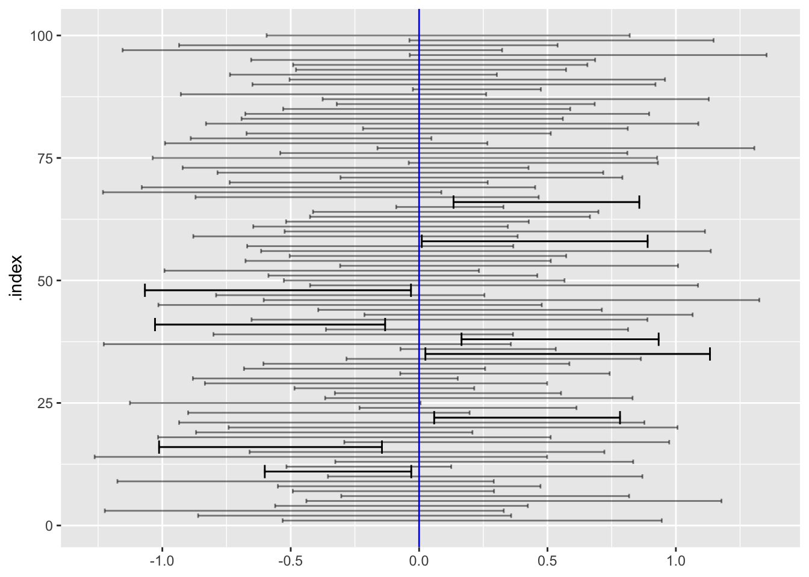

TenMileRace %>% filter(age > 40) %>%
lm(net ~ age, data = .) %>% coefficients()(Intercept) age
4278.21279 28.13517 Lesson 21 introduced the idea of separating data into separate components: signal and noise. The signal is a summary of the data that tells us something we want to know. Often, the signal will be one or more coefficients from a regression report, but it might be something as simple as the mean or median or standard deviation of a variable in a data frame.
The noise comes into the data from any of a variety of sources: e.g. error in measurement or a data-entry blunder. Another source of noise is omnipresent (except in a perfect census): sampling variation. The idea behind sampling variation is that the particular data at hand is just one sample and is contingent on the time and situation in which the data were collected. Data collection at a different time or situation would presumably be somewhat different.
The Greek philosopher Heraclitus (c. 500 BC) said, “You can’t step into the same river twice.” Each time you step into a river, you might be at the same place on the bank but the water around you will be different. A data sample is like collecting water from a river or lake using a dipper. Imagine ten people standing side by side on the shore of a lake, each person dipping into the water acquire a specimen and making one or more measurements from the specimen, for instance the temperature, pH, and bacteria count. Each person collects a sample—that is, a series of specimens. These might be taken one right after the other or by some protocol, say a weekly tracking of lake conditions over time.
The ten people are each doing the same thing in approximately the same place and same time, but each person’s sample—say the collection of 52 weekly specimens over the course of a year—will be different. Perhaps only a little bit different. That sample-to-sample variation will be noise.
If the ten people were fishing, each specimen would be the result of one cast of the rod. Typically this is just an empty hook, lake weeds, or a stick, but sometimes it will be a fish. At the end of the fishing day, each fisherman will have a sample. With fishing luck (or skill), some of the specimens in the sample will be fish. Presumably, the luck (or skill) of the fishermen will differ one from the other. That’s the noise of sampling variation. To fishermen the question of interest, the signal they want to measure, might be, “How good is the fishing today?” Each answers that question by looking at how many fish he or she caught. The ten fishermen’s catch will differ: sampling variation. Consequently, each fisherman’s answer will be contaminated with some noise. The fisherman’s summary (the count of fish caught) will have some noise stemming from sampling variation.
In Lesson 21, to gain some feeling for sampling variation, we repeated trials over and over gain. Each trial consisted of collecting a sample (that is, multiple specimens) and summarizing it. The individual trial is a summary of a sample. We then summarized the whole set of trials with the standard deviation. This is how we quantified sampling variation.
Now it is time to take off the DAG training wheels and measure sampling variation from actual data, from a single sample. This sounds like an impossible task. Sampling variation is about the variation in summaries between samples. With a single sample there is no “between” to be had.
What we will need to estimate sampling variation from a single sample is a way to simulate drawing new samples from the single sample.
Authors of statistics books tend to choose examples based on their own interests rather than their students’, so in this section let’s look at athletic performance as people age. The TenMileRace data are readily to hand, so we’ll look at net race time (from start line to finish line) as a function of age. We’ll limit the study to people over 40.
TenMileRace %>% filter(age > 40) %>%
lm(net ~ age, data = .) %>% coefficients()(Intercept) age
4278.21279 28.13517 The units of net are seconds, the units of age are years (as conventional). The model coefficient on age tells us how the net time changes for each additional year of age. This summary of the data tells us that the time to run the race gets longer by about 28 seconds per year. So a 45-year-old runner who completed this year’s 10-mile race in 3900 seconds (that’s about 9.2 mph, a pretty good pace!) might expect that, in ten years, when she is 55 years old her time will be longer by 280 seconds.
It would be asinine to report the ten-year change as 281.3517 seconds. The runner’s time ten years from now will be influenced by the weather, crowding, the course conditions, whether she finds a good pace runner, the training regime, improvements in shoe technology, injuries, illnesses, etc. There’s little or nothing we can say from the TenMileRace data about such factors.
But we should not forget sampling variation. TenMileRace has 2898 includes 2898. The way the data was collected (radio-frequency interogation of a dongle on the runner’s shoe) suggests that the data is a census of finishers, but really it is a sample of the kind of people who run such races. People might have been interested in running but had a schedule conflict, or lived too far away, or missed their train into the start line in the city. So we’ll treat the data as a sample.
This sample of 2898 runners is the only sample we have, so there is no option to compare multiple samples in order to look at sampling variation. That’s no excuse for not making an interval estimate on the age coefficient. We have to use some ingenuity.
Here’s an idea. Instead of using samples of size 2898, let’s use sub-samples one-tenth the size: \(n=290\). We’ll select the subsamples at random:
Over40 <- TenMileRace %>% filter(age > 40)
lm(time ~ age, data = Over40 %>% sample(size=290)) %>% coefficients()(Intercept) age
4694.73528 23.37827 lm(time ~ age, data = Over40 %>% sample(size=290)) %>% coefficients()(Intercept) age
4669.07546 23.89813 The age coefficients differ one from the other by about 0.5 seconds. Better, let’s select many subsamples of size 1449 at random, and find the age coefficient for each of them. We will run 100 trials
# a sample of summaries
Trials <- do(1000) * {
lm(time ~ age, data = sample(Over40, size=290)) %>% coefficients()
}
# a summary of the sample of summaries
Trials %>%
summarize(se = sd(age)) se
1 9.042024We used the name se for the summary of samples of summaries because what we have calculated is the standard error of the age coefficient in a sample of size \(n=290\).
In Lesson 22 we saw that the standard error is proportional to \(1/\sqrt{\strut n}\), where \(n\) is the sample size. From the subsamples, know that the SE for \(n=290\) is about 9.0 seconds. This tells us that the SE for the full \(n=2898\) samples would be about \(9.0 \frac{\sqrt{290}}{\sqrt{2898}} = 2.85\).
So the interval summary of the age coefficient—the so-called “confidence interval” is \[\underbrace{28.1}_\text{age coef.} \pm 2\times\!\!\!\!\!\!\! \underbrace{2.85}_\text{standard error} =\ \ \ \ 28.1 \pm\!\!\!\!\!\!\!\! \underbrace{5.6}_\text{margin of error}\ \ \text{or, equivalently, 22.6 to 33.6}\]
There is a trick to generating a random subsample of a data frame with the same \(n\) as the data frame: draw the subsample from the original sample with replacement. An example will suffice to show what the “with replacement” does:
example <- c(1,2,3,4,5)
# without replacement
sample(example)[1] 1 4 3 5 2# now, with replacement
sample(example, replace=TRUE)[1] 2 4 3 3 5sample(example, replace=TRUE)[1] 3 5 4 4 4sample(example, replace=TRUE)[1] 1 1 2 2 3sample(example, replace=TRUE)[1] 4 3 1 4 5The “with replacement” leads to the possibility that some of the values will appear two or more times in the subsample and others of the values will be left out.
The calculation of the SE using sampling with replacement looks like this: rset.seed(207)`
# run many trials
Trials <- do(1000) * {
lm(time ~ age, data = sample(Over40, replace=TRUE)) %>%
coefficients()
}
# summarize the trials to find the SE
Trials %>% summarize(se = sd(age)) se
1 2.948786# or let the computer do the work of converting to a confidence interval
Trials %>% confint() name lower upper level method estimate
1 age 21.58031 33.3163 0.95 percentile 27.2782This method is called “bootstrapping a confidence interval.” The same word, “bootstrapping” is used to describe how a computer turns itself on. It comes from the idea of a person raising herself from the ground by pulling upward on her own boots. An impossible task. And a suitable metaphor for generating many samples from a single sample.
Lesson 21 pointed to the idea of data consisting of two parts: signal plus noise. In Lesson 22 and thusfar in this lesson, we’ve tried to estimate the signal by summarizing the data. But we still had to account for sampling variation, which we did by generating many subsamples.
Another route to measuring sampling variation takes more literally the division of data into signal and noise. The idea is still to estimate the signal by a regression model summary. But now, we take the residuals from the model as the evidence for how much noise there is. We quantify the variation in the residuals in the same way that we have always done: their standard deviation. This quantity, the standard deviation of the residuals from a model, has its own technical name: the “residual standard error.” For some types of models, it’s possible to push the residual standard error through the model-fitting apparatus in order to construct standard errors and confidence intervals. The mathematics of this is a matter for specialists, but computers handle the calculations well.
The confint() function knows how to take lm()-fitted models and translate the residuals into confidence intervals. Like this:
lm(time ~ age, data = Over40) %>% confint() 2.5 % 97.5 %
(Intercept) 4239.50891 4804.89396
age 21.58833 32.96807Contemporary statistics uses many different model types depending on the situation. In this course we will only use two: linear models and generalized linear models. The field of machine learning has introduced many other kinds of models, often with evocative names like “regression trees,” “random forests,” and “vector support machines.” Usually there is not a way to push the residual standard error through such calculations. But when a confidence interval is needed, the boostrapping method can always be used.
one_trial <- function(n=2) {
vals <- rnorm(n)
tibble(m = mean(vals), s = sd(vals))
}The confidence interval from each trial will be \(m \pm \beta s\), where \(\beta\) is a number yet to be determined. How to do so, we want to select \(\beta\) so that, across all trials, 95% will include the mean of the distribution from which the data values were drawn.
# vary beta until 95% of the trials have a left value smaller than zero.
n <- 10000
beta <- 0.02
Trials <- do(1000) * one_trial(n=n) %>%
mutate(left = m - beta*s, right = m + beta*s)
Trials %>%
summarize(coverage = sum(sign(left*right) < 0)/n())# A tibble: 1 × 1
coverage
<dbl>
1 0.967For sample size \(n=10\), \(\beta\) needs to be 0.72, while for a sample size \(n=100\), \(\beta\) needs to be 0.20. For \(n=1000\), the multiplier needs to be 0.062, and so on. For \(n=10000\), the multiplier needs to be 0.02
| n | \(\beta\) | \(t = \beta / \sqrt{\strut n}\) |
|---|---|---|
| 10 | 0.72 | 2.26 |
| 15 | 0.55 | 2.14 |
| 20 | 0.47 | 2.09 |
| 50 | 0.28 | 2.01 |
| 100 | 0.20 | 1.98 |
| 500 | 0.088 | 1.96 |
| 1000 | 0.062 | 1.96 |
| 10000 | 0.20 | 1.96 |
Notice that as \(n\) gets bigger, the size of \(\beta\) to cover 95% of the trials gets smaller. More than a century ago, it was known that the multiplier for any sample size \(n\) is effectively \(2/\sqrt{n}\). Consequently, the confidence interval for the mean of \(n\) values is approximately
\[\mathtt{CI} = \mathtt{mean(x)}\pm \underbrace{\frac{2}{\sqrt{n}} \mathtt{sd(x)}}_\text{margin of error}\]
The quantity following the \(\pm\) is called the “margin of error.” Because of the \(\pm\), he overall length of the confidence interval is twice the margin of error.
It’s much easier to remember \(2/\sqrt{n}\) than a list of \(\beta\) values that change from one \(n\) to the next. Another ubiquitous memory aid involves another technical term, the standard error. This involves a simple re-arrangement of the equation for the confidence interval:
\[\mathtt{CI} = \mathtt{mean(x)}\pm 2\underbrace{\frac{\mathtt{sd(x)}}{\sqrt{n}}} _\text{standard error}\]
It’s standard in statistical software to report the standard error of a coefficient. Usually abbreviated se or std.error or something similar. The software is doing the divide-by-\(\sqrt{n}\) for you, so all you need to construct the margin of error is multiply the standard error by 2. That’s convenient, but it comes at the cost of yet another use of the words “standard” and “error,” which can be confusing.
Here’s an example of a typical software output summarizing a model in the format called a “regression report.” Here’s an example, looking at the fuel economy of cars (mpg) as a function the car’s weight (wt) and horsepower (hp).
lm(mpg ~ wt + hp, data = mtcars) %>%
regression_summary()# A tibble: 3 × 5
term estimate std.error statistic p.value
<chr> <dbl> <dbl> <dbl> <dbl>
1 (Intercept) 37.2 1.60 23.3 2.57e-20
2 wt -3.88 0.633 -6.13 1.12e- 6
3 hp -0.0318 0.00903 -3.52 1.45e- 3According to this report, each additional 1000 lbs of weight decreases fuel economy by an estimated 3.9 miles per gallon. But since the model is based on a sample of data, it’s important to report the precision of that number in the face of sampling variation. The confidence interval is the standard format for that precision. It will be the estimate plus-or-minus two times the standard error, that is: \(-3.88 \pm 2\times0.633\), that is, -5.15 to -2.61 mpg per 1000 lbs. Similarly, each addition horsepower (hp) lowers fuel economy by \(-0.032 \pm 2 \times 0.009\), that is, -0.05 to 0.013 mpg per horsepower.
Even more convenient is to calculate the confidence interval with confint() which handles all the computations, including the ones for tiny \(n\) described in ?sec-tiny-n.
Notice that the estimate of the wt coefficient in the above regression report is -3.87783074. That seems like an awful lot of digits to report when the confidence interval is -5.15 to -2.61. Or, rather, an awful lot of digits for the human reader.
It is of course easy for the human to ignore the last several digits of the number. This makes reading more reliable; there are not as many digits to confuse. Even worse, the many digits suggest a level of precision that is belied by the width of the confidence interval. (When the number is going to be part of a continuing computation, that is, the “reader” is a computer, mis-interpretion or faulty reading is not an issue, which is why the software calculates so many digits .)
So how many digits ought to be reported for a human reader? There is an easy procedure to determine this.
Look at the standard error in the regression report and multiply by 2 to get the margin of error. For example, for the hp coefficient, the margin of error is \(2 \times 0.63273349 = 1.265467\).
It is always the case that no more than two digits of the margin of error have any meaning. (Even the second digit would suffer sampling variation.) So round the margin of error to two digits, that is 1.3 for the hp standard error.
Notice the location of the second digit of the rounded standard error. For hp, the second digit is 3 and it’s located in the one-tenths place. Round the coefficient to this place. So, the hp coefficient -3.87783074 will round to -3.9.
The confidence interval, formatted for the human reader, will be the rounded coefficient plus-or-minus the rounded standard error. For hp, the confidence interval will be \(-3.9 \pm 1.3\) or -5.2 to -2.6.
When you have a very small sample size—say, \(n=2\)—the values may coincidentally be very close together. Around 1907, William Gosset, a scientist at Guinness, discovered that such coincidences force \(\beta\) to be much larger than \(2/\sqrt{n}\) in order to produce confidence intervals that cover the mean of the data-generating process. Gosset’s particular interest was in making sense of Guinness’s standard testing protocols, which involve averaging the results from three small batches of beer ingredients. Contacting the leading statisticians of the day, Gosset was told that such small \(n\) is “brewing, not statistics.” Nonetheless, Gosset had to work within Guinness’s testing protocols, which were indeed brewing but still needed statistical interpretation.
Gosset carried out trials by hand, a large number of measurements from a study of criminals’ hand sizes. (They did this kind of thing in 1900.) Each measurement was written on a card. A trial consisted of drawing \(n\) cards from the deck and calculating the mean and standard deviation of the measurements. Using computers, we can simulate the calculation of results from a Gosset-like trials using a simple function that calculates the mean and standard deviation of data from a Gaussian distribution.
one_trial <- function(n=2) {
vals <- rnorm(n)
tibble(m = mean(vals), s = sd(vals))
}We can pick a small \(n\) and running many trials using a candidate value for “twice.”
::: {.callout-warning} ## IN DRAFT
CONVERT the beta to something named twice.
n=10
beta <- 2 / sqrt(n)
Trials <- do(100) * one_trial(n=n) %>%
mutate(left = m - beta*s, right = m + beta*s)
gf_errorbarh(.index ~ left + right, data = Trials, alpha=0.5) %>%
gf_errorbarh(.index ~ left + right,
data = Trials %>% filter(left > 0 | right < 0)) %>%
gf_vline(xintercept = ~ 0, color="blue", inherit=FALSE)
Gosset effectively tabulated the \(\beta\) multipliers
| n | \(\beta\) | \(t = \beta / \sqrt{\strut n}\) |
|---|---|---|
| 2 | 8.98 | 12.7 |
| 3 | 2.48 | 4.30 |
| 4 | 1.59 | 3.18 |
| 5 | 1.24 | 2.78 |
| 6 | 1.04 | 2.57 |
| 7 | 0.92 | 2.44 |
| \(\vdots\) | ||
| 10 | 0.72 | 2.26 |
| 15 | 0.55 | 2.14 |
| 20 | 0.47 | 2.09 |
| 50 | 0.28 | 2.01 |
| 100 | 0.20 | 1.98 |
| 500 | 0.088 | 1.96 |
| 1000 | 0.062 | 1.96 |
You can see that for \(n\) bigger than 10 or 20, the \(t\) multiplier is 2. But for very small \(n\), the t-multiplier can be considerably larger.
You can see the wisdom of brewers here. They made tests by averaging measurements from three small batches of beer. If they had used only two batches, the confidence interval would be almost three times larger than for \(n=3\), making it very hard to conclude anything about whether the tests show the ingredients to be within the quality-control standards.
Gosset’s work was published under the pseudonym “Student,” since Guinness forbade employees to publish under their own names. Statisticians, recognizing the value of the work (and knowing the name behind the pseudonym), came to use the name \(t\), perhaps because tea was considered more refined than “beer.” In many statistics texts, you will see the phrase “Student t” to refer to how Gosset’s work is used.